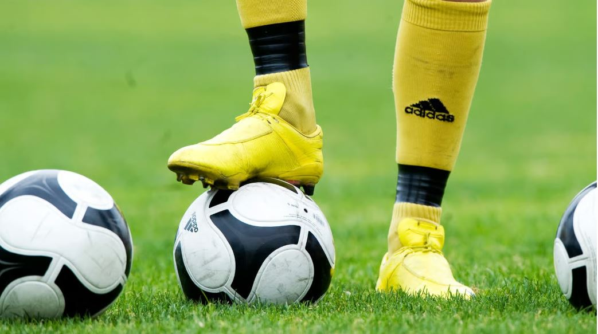

Fotboll
Publicerad 2025-10-03
Nu har många fotbollsligors säsonger dragit igång och nu är det kamp om troféerna. I Sverige fokuseras det mycket på högsta ligan Allsvenskan, men även Superettan är en populär liga med många bra lag.
Webbutvecklingsprogrammet
Nu har många fotbollsligors säsonger dragit igång och nu är det kamp om troféerna. I Sverige fokuseras det mycket på högsta ligan Allsvenskan, men även Superettan är en populär liga med många bra lag.
Berg är vackra att se på och kan en klar dag synas på långt håll. Men hur uppstår berg? När två plattor rör sig mot varandra viker de sig, två mattor som trycks ihop. Jordskorpan veckas långsamt uppåt under miljontals år, och till slut har ett berg bildats!
Träd består av en eller flera stammar och kan leva längre än människor. Det finns träd som bär frukt och de som bär blad. Förutom att träd är bra för fotosyntesen så att vi kan andas, så är det även hem för flera djur och arter. Med hjälp av pollen kan det även bidra till att andra växter pollineras och blommar.